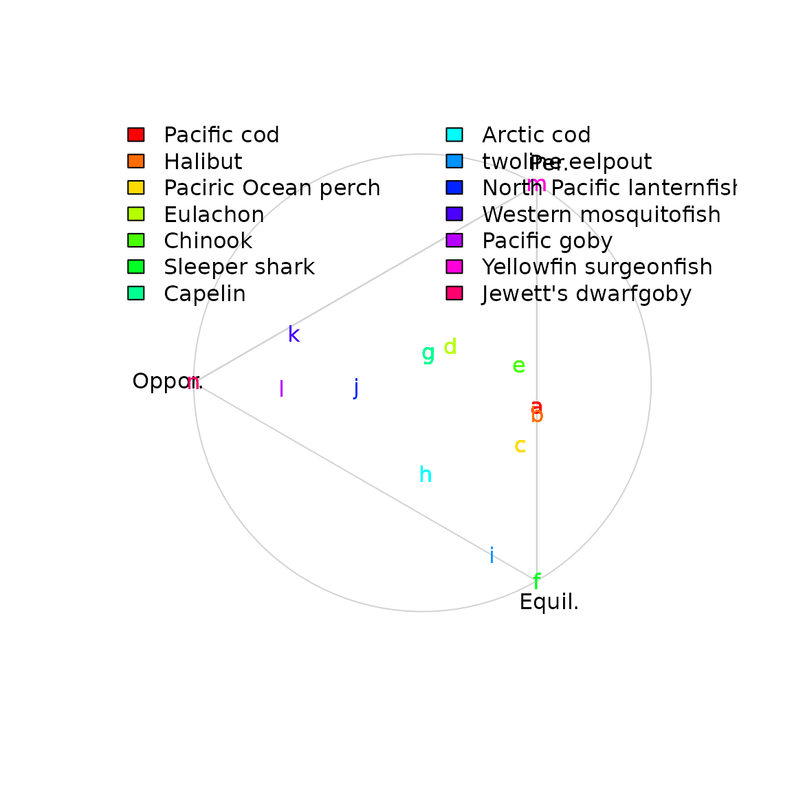
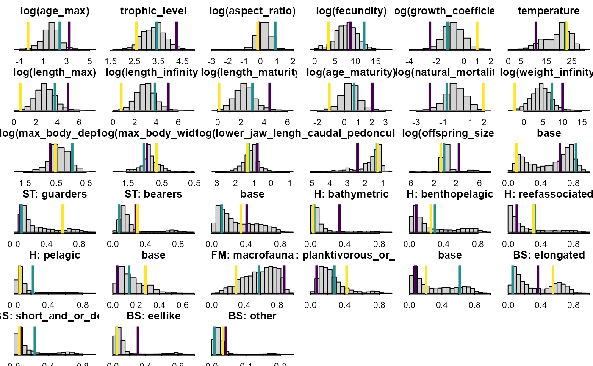

Description
We here show how to replicate and extract the archetypes estimated in Thorson et al. 2023. We first load packages and data:
# Load packages and data
library(archetypes)
library(FishLife)
data(FishBase_and_Morphometrics)
# Set seed so that archetypes are labeled the same way when replicating
suppressWarnings(RNGversion("3.5.0"))
set.seed(1986)Next we re-run the archetype analysis and plot the resulting simplex of archetypes
# Load results
beta_iv = FishBase_and_Morphometrics$beta_gv[ FishBase_and_Morphometrics$g_i, ]
a <- archetypes(beta_iv, 3, verbose = TRUE)
#> 1: rss = 0.00844337, improvement = 0.00939731
#> 2: rss = 0.00789766, improvement = 0.00054571
#> 3: rss = 0.00779479, improvement = 0.00010287
#> 4: rss = 0.00778014, improvement = 0.00001465
#> 5: rss = 0.00777922, improvement = 0.00000092
#> 6: rss = 0.00777984, improvement = -0.00000062
# Labels
Labels = c("Equil.","Oppor.","Per.")[c(1,3,2)]
Col_names = colnames(FishBase_and_Morphometrics$Y_ij)
Col_names = gsub("habitat", "H: ", Col_names )
Col_names = gsub("body_shape", "BS: ", Col_names )
Col_names = gsub("feeding_mode", "FM: ", Col_names )
Col_names = gsub("spawning_type", "ST: ", Col_names )
# Col function
mycol = function(x,alpha){
y = col2rgb(x)
rgb( y[1,1]/255, y[2,1]/255, y[3,1]/255, alpha=alpha)
}
# Plot by taxa
Z_ik = FishBase_and_Morphometrics$Z_ik
simplex = simplexplot(a, show_points=FALSE, labels=Labels) #, projection=atypes_projection)
points( simplex$proj_h[which(Z_ik$Family=="Gobiidae"), ], col=mycol("brown",0.5), pch=20 )
points( simplex$proj_h[which(Z_ik$Family=="Percidae"), ], col=mycol("orange",0.5), pch=20 )
points( simplex$proj_h[which(Z_ik$Family=="Salmonidae"), ], col=mycol("red",0.5), pch=20 )
points( simplex$proj_h[which(Z_ik$Family=="Scorpaenidae"), ], col=mycol("grey",0.5), pch=20 )
points( simplex$proj_h[which(Z_ik$Family=="Clupeidae"), ], col=mycol("green",0.5), pch=20 )
points( simplex$proj_h[which(Z_ik$Class=="Elasmobranchii"), ], col=mycol("black",0.5), pch=20 )
points( simplex$proj_h[which(Z_ik$Family=="Poeciliidae"), ], col=mycol("blue",0.5), pch=20 )
points( simplex$proj_h[which(Z_ik$Family=="Atherinidae"), ], col=mycol("purple",0.5), pch=20 )
legend( "topleft", bty="n", ncol=2, legend=c("Gobiidae","Salmonidae","Poeciliidae",
"Atherinidae","Percidae","Scorpaenidae","Clupeidae","Elasmobranchii"),
fill=c("brown","red","blue","purple","orange","grey","green","black"))
If interested, we can pull out values for individual species based on their Latin binomial. We here show a few examples:
# Pull out examples
Z_ik = FishBase_and_Morphometrics$Z_ik
species_to_plot = data.frame(
c("Gadus_macrocephalus", "Hippoglossus_stenolepis", "Sebastes_alutus", "Thaleichthys_pacificus",
"Oncorhynchus_tshawytscha", "Somniosus_pacificus", "Mallotus_villosus", "Boreogadus_saida",
"Bothrocara_brunneum", "Tarletonbeania_taylori", "Gambusia_affinis", "Callogobius_sclateri",
"Acanthurus_xanthopterus", "Eviota_jewettae"),
c( "Pacific cod", "Halibut", "Paciric Ocean perch", "Eulachon", "Chinook", "Sleeper shark",
"Capelin", "Arctic cod", "twoline eelpout", "North Pacific lanternfish",
"Western mosquitofish", "Pacific goby", "Yellowfin surgeonfish", "Jewett's dwarfgoby")
)
species_to_plot$color = rainbow(nrow(species_to_plot))
# Plot by taxa
simplex = simplexplot(a, show_points=FALSE, labels=Labels)
for( r in seq_len(nrow(species_to_plot)) ){
which_row = which(paste0(Z_ik$Genus,"_",Z_ik$Species)==species_to_plot[r,1])
text( x=simplex$proj_h[which_row,1], y=simplex$proj_h[which_row,2],
col=species_to_plot[r,3], labels=letters[r] )
}
legend( "topleft", bty="n", ncol=2, legend=species_to_plot[,2], fill=species_to_plot[,3])
Finally, we can plot the distribution of predicted traits for all species, along with the predicted mean for each archetype:
Col_names = colnames(FishBase_and_Morphometrics$beta_gv)
Col_names = gsub("habitat", "H: ", Col_names )
Col_names = gsub("body_shape", "BS: ", Col_names )
Col_names = gsub("feeding_mode", "FM: ", Col_names )
Col_names = gsub("spawning_type", "ST: ", Col_names )
dims = c(6,6)
par( mfrow=dims, mgp=c(2,0.5,0), mar=c(1,1,2,0), tck=-0.02 )
for( cI in 1:ncol(FishBase_and_Morphometrics$beta_gv) ){
hist( FishBase_and_Morphometrics$beta_gv[,cI],
main=Col_names[cI], xlab="", ylab="", yaxt="n" )
abline( v=parameters(a)[,cI], col=viridisLite::viridis(3), lwd=3 )
}